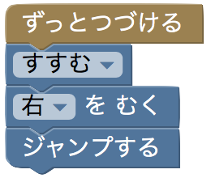
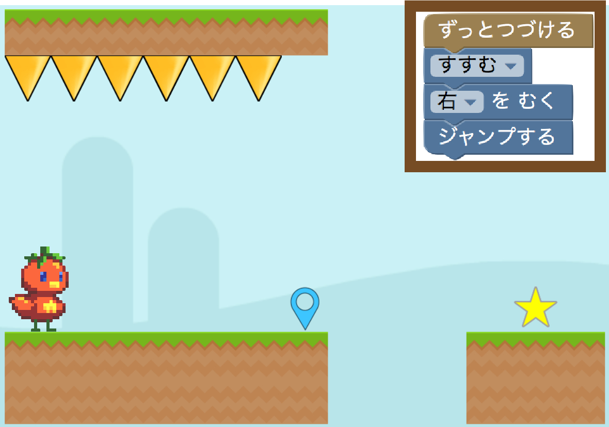
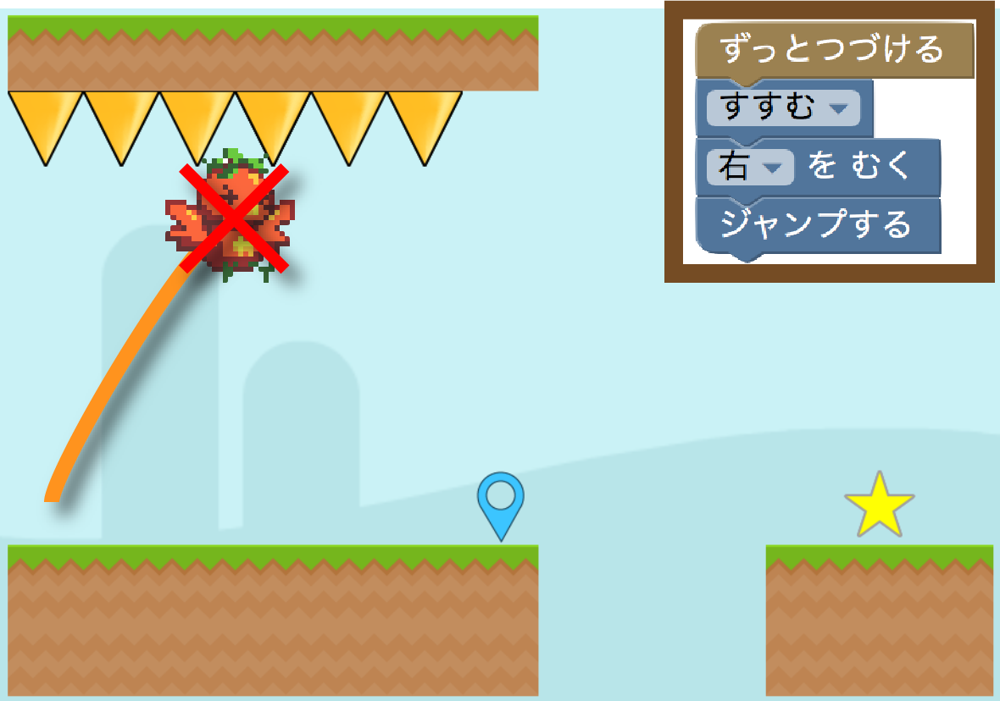
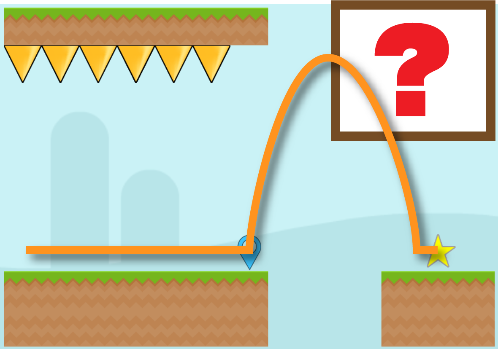
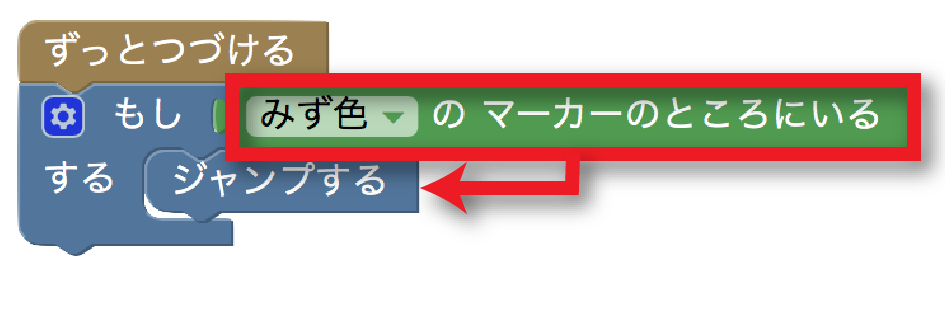
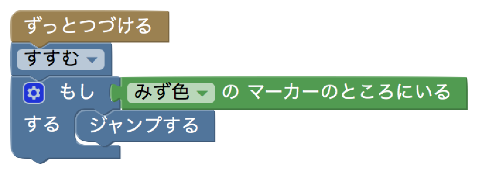

パソコンは、かならずすべてのブロックをうごかします。

となりのじめんに飛びうつりたいとき…

これではジャンプしたらやられてしまいます。

みず色のマーカーのところにいるときだけジャンプするにはどうすればいいでしょうか?

ばあいわけ、のブロックを使うとうまくいくかもしれません。

このブロックは「もし、」の右がわについているブロックと今のじょうたいがあっていたら、「する」のところについているブロックをうごかします。

ということは、こんな風にブロックを組むと…

マーカーの上にいるときだけ、ジャンプすることができます。